「となりに、いる」
となりの人が
困っているとき、
手をのばせるように。
手をのばした人も
いつか誰かに
支えてもらえるように。
支える、支えられる、
そのあいだに
線を引かないように。
わたしたちは
この町のすみずみで
ひとりの暮らしを
まん中において
今日も、となりにいます。
子育てひろば「ぽけっと」秋の出張ひろば日程のお知らせ【10月から】
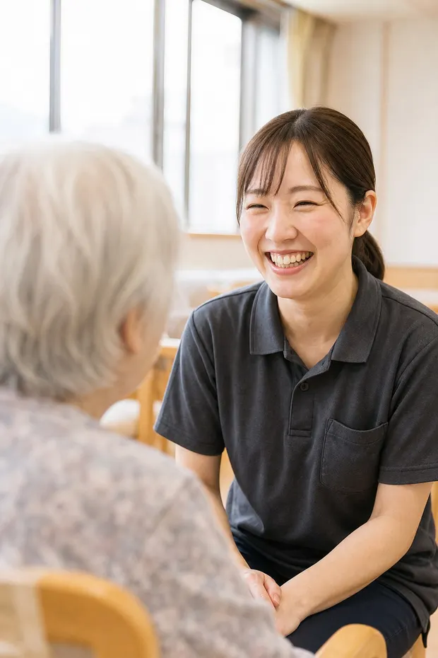
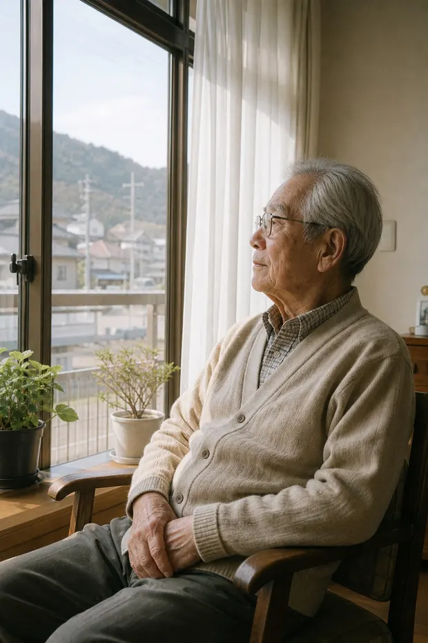
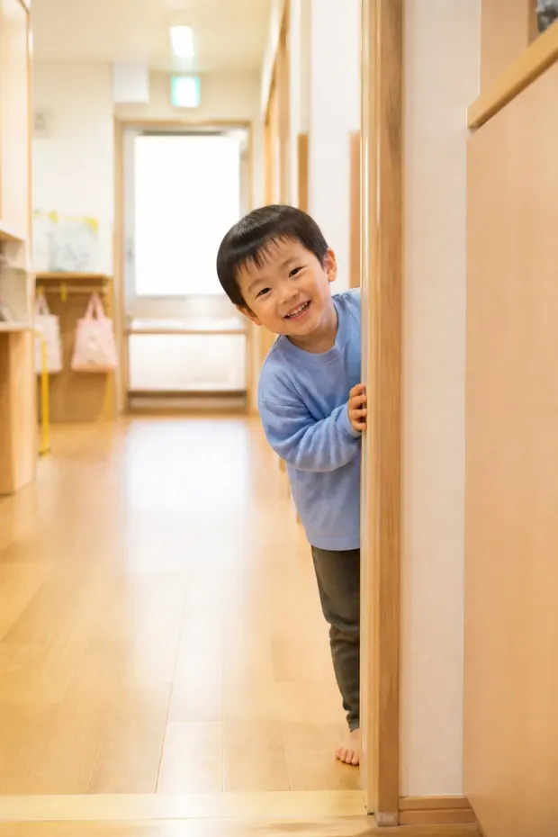
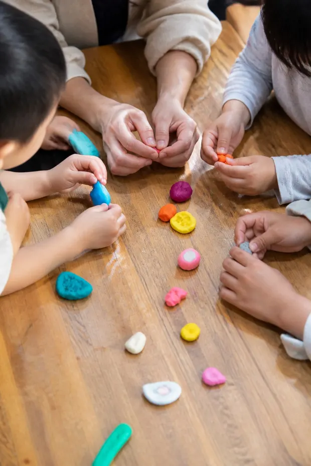
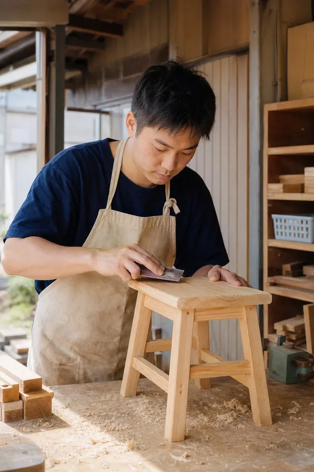
Who we are
町のすきまに、
手をのばす。
困ったときに「困った」と言える。
言われたほうも、ひとりで抱えない。
そんな関係を、町のなかに増やしたい。
富士のふもとの古民家から始まって、
いまは92の拠点で、
暮らしのすぐとなりにいます。
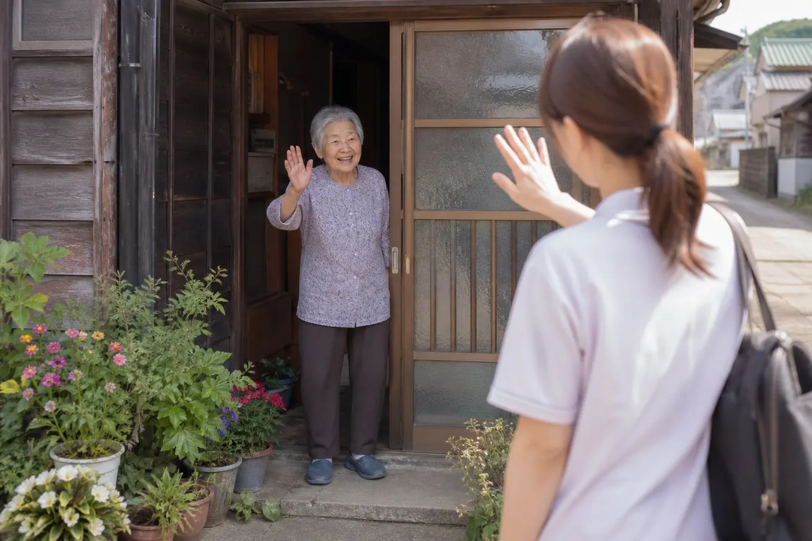
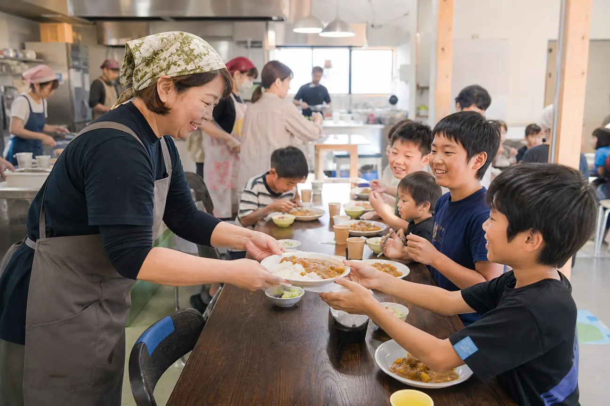
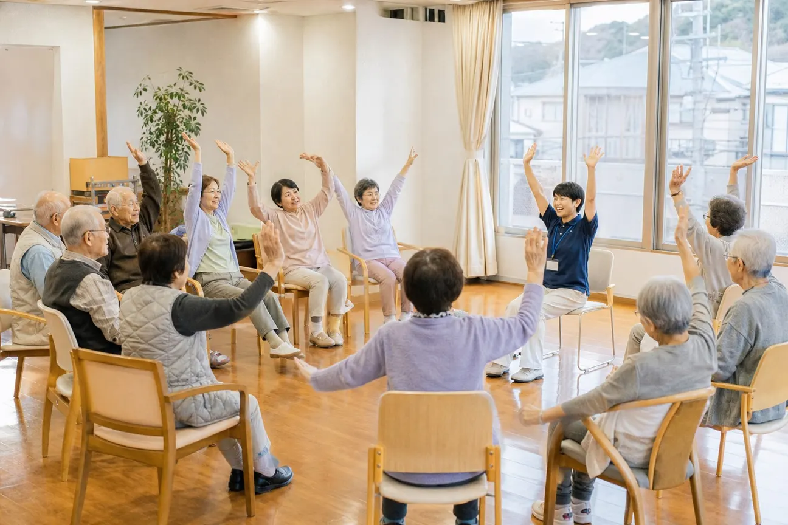
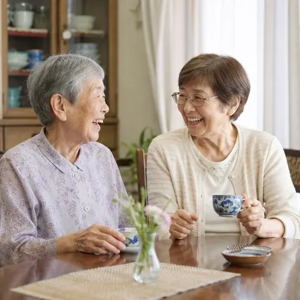
Five Fields of Care
暮らしを支える、
5つの分野
- 高齢の方の
支援34事業所 - 障がいのある
方の支援21事業所 - 子ども・
子育て支援16事業所 - 暮らしの
立て直し支援12事業所 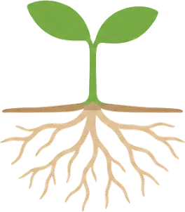
地域の
居場所づくり9拠点- 町と困りごとから
事業所をさがすさがす
-
子ども・子育て支援
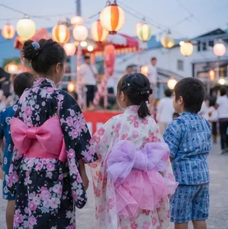
浴衣でそろった夏まつり from子育てひろば ぽけっと -
高齢の方の支援
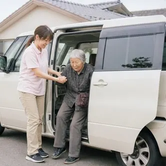
おかえりなさいの送迎便 fromデイサービス かざみ坂 -
障がいのある方の支援
工房の畑で、
大根を収穫しました from障がい者就労支援 ひとつぼし工房 - 法人の取り組み 新しく入った職員の介助研修 fromあわいの森 法人本部
-
子ども・子育て支援
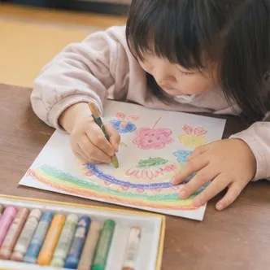
クレヨンで絵手紙を描きました fromこども食堂 まんまる -
暮らしの立て直し支援
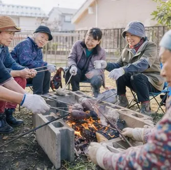
たき火を囲んで、焼き芋の会 from暮らし相談センター ともづな -
高齢の方の支援
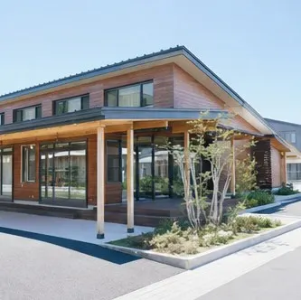
ゆずり葉の新しい棟が
できあがりました fromグループホーム ゆずり葉 -
高齢の方の支援
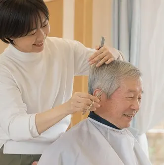
出張散髪の日、
さっぱりしました from小規模多機能ホーム くすのき通り
この分野の日記は、いま準備中です。
一覧をみる- 子育てひろば「ぽけっと」秋の出張ひろば日程のお知らせ【10月から】
- 冬の介護資格講座（富士会場）の受講者を募集しています【10月3日まで】
- 【広報誌】『あわいだより』秋号を
発行しました。各拠点の窓口と
市内の公民館で配っています - 台風で休んでいた3つの拠点は、
すべていつもどおり再開しました